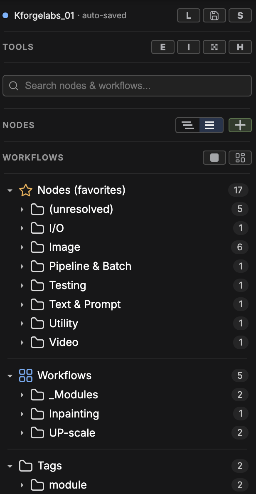
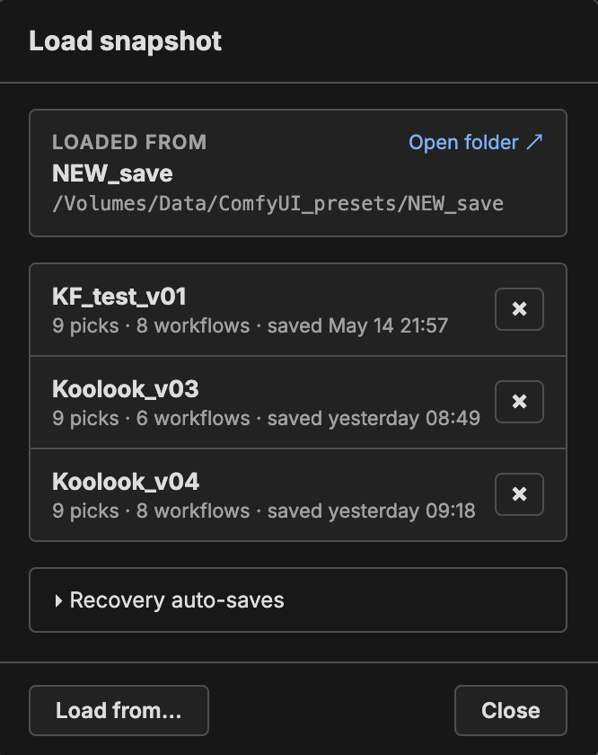
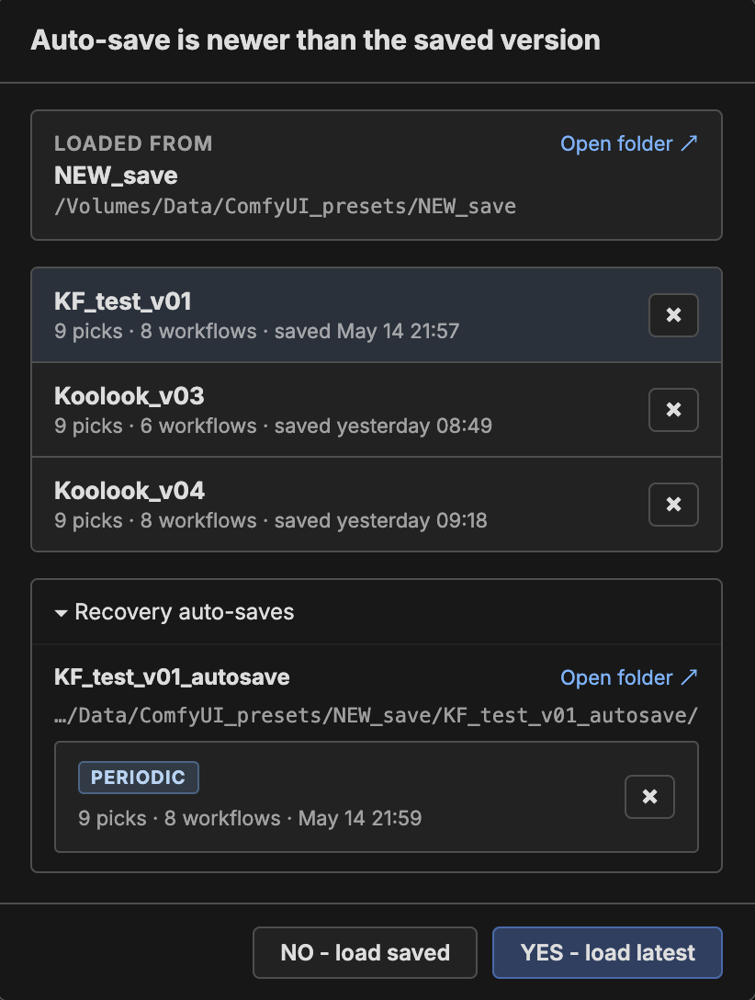
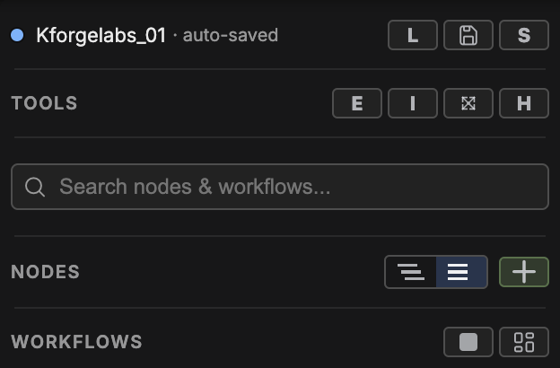
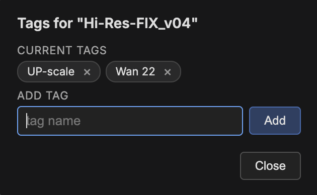
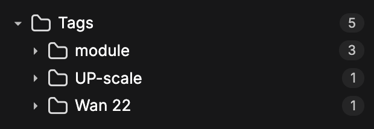
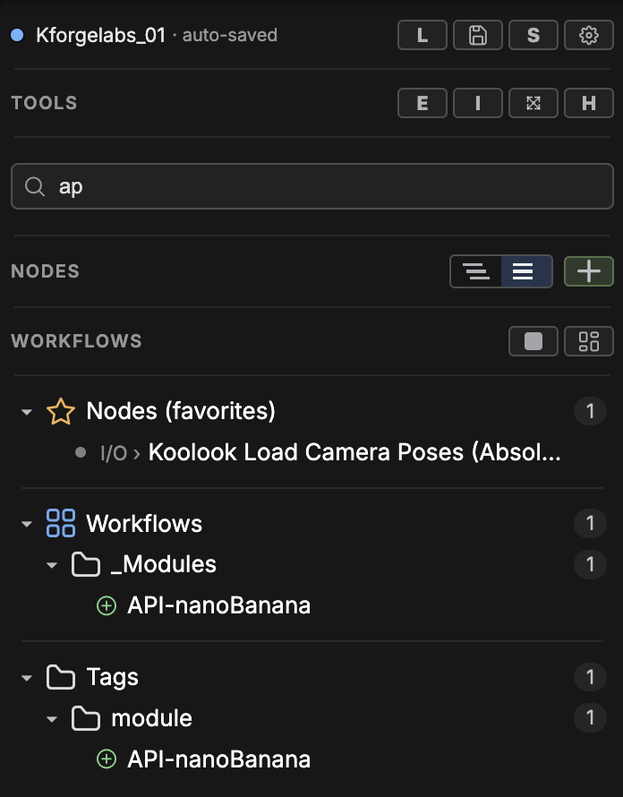
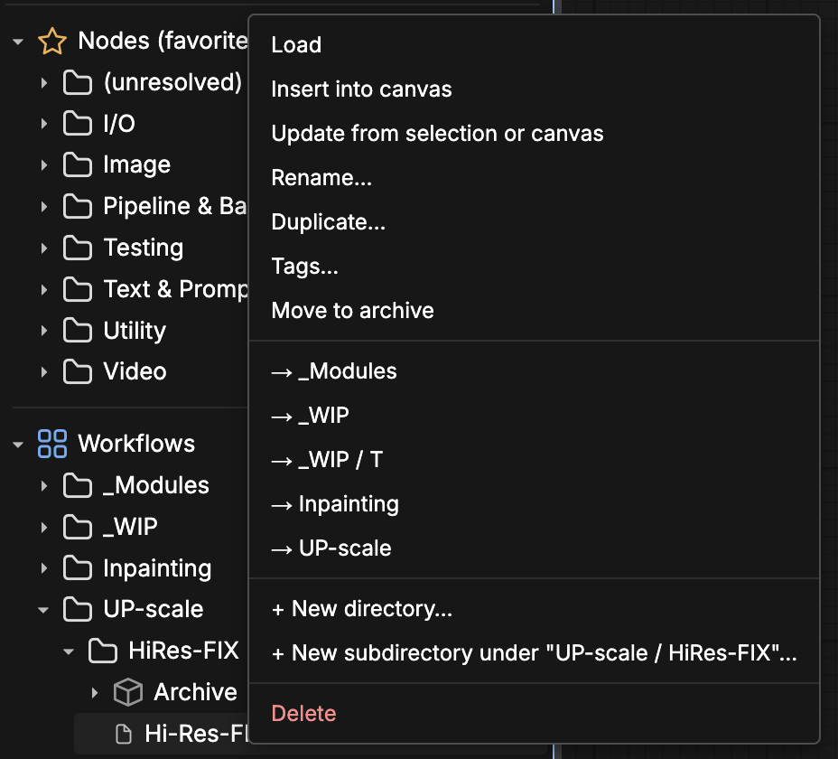
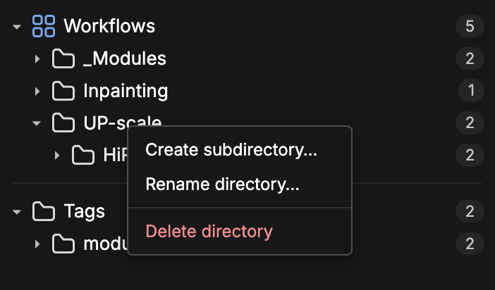

Snapshot row
Status, Load, Quick Save, Save.
Kforge Labs
Save the nodes, modules, workflows, tags, and snapshot state you need for a project, then load that setup again when the work comes back.
Start here
Snapshot, Tools, Search, Nodes, Workflows, and saved lists work together to keep each project kit easy to save, find, and reload.

Status, Load, Quick Save, Save.
Maintenance plus the Help guide.
Find nodes, workflows, folders, and tags.
Arrange nodes by Git repo name or theme, and add favorite nodes to the side panel.
Save the entire canvas or selected nodes.
Nodes, Workflows, and Tags stay visible below.
Most important idea
A snapshot saves your favorite nodes, workflows, modules, tags, and the current sidebar organization. Use one named snapshot per project, shot, client, or experiment.

Two-layer save
Your named snapshot only changes when you click Save or Quick Save. Auto-save runs every 5 minutes in the background — but only when something has actually changed — and writes a separate recovery copy PERIODIC under <snapshot>_autosave/. If you load a snapshot whose recovery copy is newer than the saved version, the Load dialog keeps both choices in view: NO - load saved or YES - load latest. At load time, Kforge Labs also creates a timestamped recovery copy of the kit being replaced PRE-LOAD_* in that same <snapshot>_autosave/ folder, so you can restore it later from Snapshot row → L (Load) → Recovery auto-saves. See Showcase 2 below.
Project rhythm

Save and reload the whole project kit.
Keep favorite nodes organized and easy to update.
Filter your curated kit by node, workflow, folder, or tag.
Save full scripts or reusable node selections.
Reshape your saved work folders, drag-drop, and move.
Visual recipes
Snapshot library
Load snapshot row restores that saved project kit. Use the named snapshot list when you want to switch projects, return to a shot, or reload a deliberate save. See also: TWO-LAYER SAVE

Snapshot library · Auto-save options
The Load dialog shows Recovery auto-saves for the selected kit. Periodic is the latest background auto-save. Pre-load entries are timestamped copies made when another kit replaced this one. When the newest recovery copy is newer than the named save, choose NO - load saved or YES - load latest. See also: TWO-LAYER SAVE

Reusable modules
Save saves the entire canvas under the workflows tree. Save selection stores only the selected canvas nodes. Use Save as module to insert it back into another canvas later.

Tags
Add tags to saved workflows and modules so the same item can appear under more than one useful label. A module can live in its folder, show up under Tags, and still be found from Search.


Search
Search inside the kit you already curated: verified nodes, saved workflows, folders, and tags arranged your way. You do not need the full exact name — type the part you remember and it filters across those layers.

Context actions
Right-click any saved workflow or module for a full action menu. Use Update from selection or canvas to refresh an existing saved workflow without recreating it. You can also load, insert, rename, retag, move, duplicate, archive, and delete — all without leaving the sidebar.

Folder organization
Create or delete folders to shape your library. Drag and drop to rearrange items between folders, then group, rename, or rearrange anytime.
